Oracle invite’s ML researchers to give biweekly talks. These are my notes from these sessions.
Provenance and its Applications
Presenter: https://www.seltzer.com/margo/
Provenance == Lineage
How to know whether a painting is authentic: Show chain of ownership of the painting from the beginning.
Provenance: A formal description of how a data element came to be in its current form.
Why and Where Provenance - Why is this piece of data in the Database ? - Where did this come from ? Is it a result of a query ?
Provenance aware storage system: Considers operating system level details
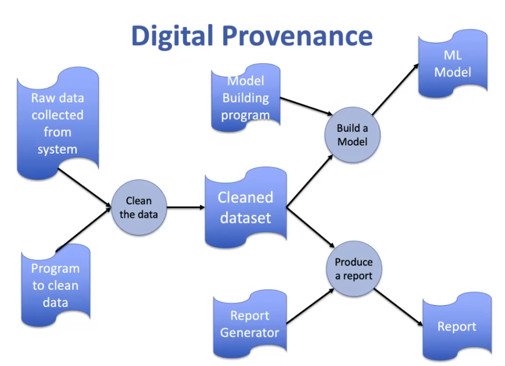
Fundamental Abstraction: Objects connected by activities. Also track who invoked these activites.
Reversing arrows creates a dependency graph.
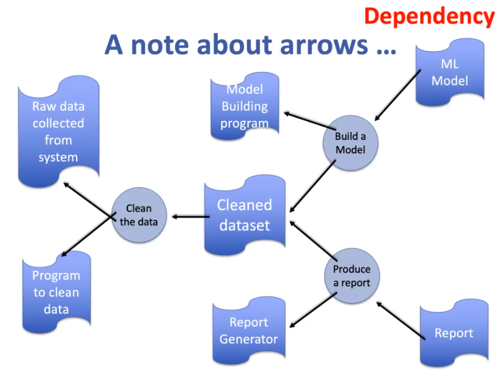
Standards
- Open Provenance Model
- W3C Prov Model
- Stadardization has not been beneficial.
- Abstraction is such a high level that it is not possible to build a semantically meaningful application on this prov model.Everybody imposes their own semantic layer on top of this prov model.
- Open Lineage
- System provenance standards were also created e.g. CamFlow
Challenges
People don’t care about provenance
It is like security, people want it but won’t pay for it (in $ or performance/computation).
General provenance doesn’t help. People want provenance specific to their problem.
Provenance is like insurance: you never really want it until it is too late.
Takeaway: Focus on provenance applications. E.g. File system search
Workflow provenance: ML Model Sharing & Reproducibility.
Provenance graphs are DAG.
Provenance could be at OS level, database level or application level
Tribuo(Java Deep Learning library) has provenance built in.
Lineage Applications
Unicorn for Intrusion Detection
Link: https://arxiv.org/pdf/2001.01525.pdf
- Using provenance graphs for intrusion detection
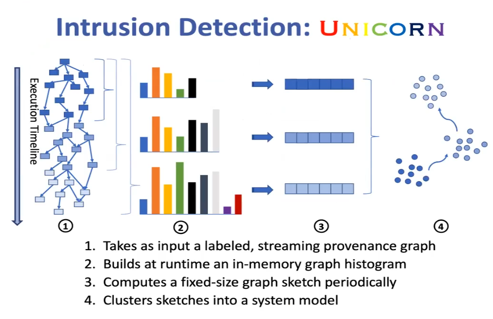
- Take snapshots of provenance(streaming graph)
- Compute a unique label for a node by computing neighborhood of node(3 hop neighborhood). Create a hash value for neighborhood and plot histogram of hash values.
- Create fixed size sketched for histograms (similarity preserving)
- if you measure Jaccard distance between two histograms, it should correspond to hamming distance between sketches.
- Models are built from sketches. Cluster sketches and keep track of transitions between clusters.
- Create for every 1000 provenance edges.(some period of time)
- If sketch does not fall in a cluster, it is a red flag.
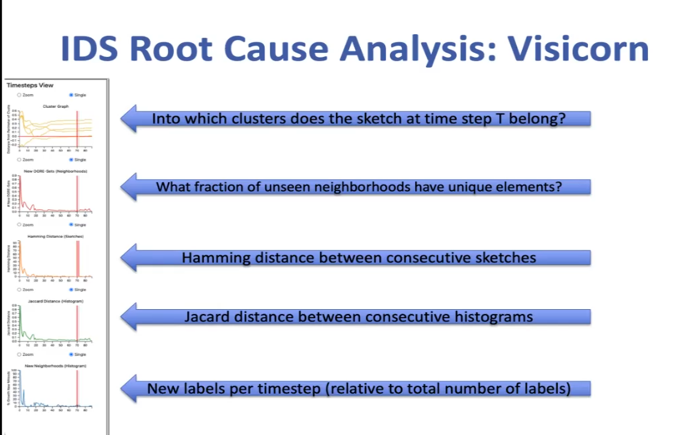
SIGL
Link: https://arxiv.org/abs/2008.11533
- Uses Graph LSTM for encoder. MLP for decoder.
Graph Representation Learning for Drug Discovery
Presenter: http://people.csail.mit.edu/wengong/
\(10^{30}\) possible combinations of molecules exist , but only \(10^5\) can be evaluated by pharma companies using existing technology.
Molecules are permutation invariant. Labeling nodes of a graph does not make a difference, for a graph neural net to learn this - need to feed all N! combinations in the training data
Applications of AI:
- Virtual Screening: Predict properties from Molecules
- Inverse design: Generate molecules from properties.
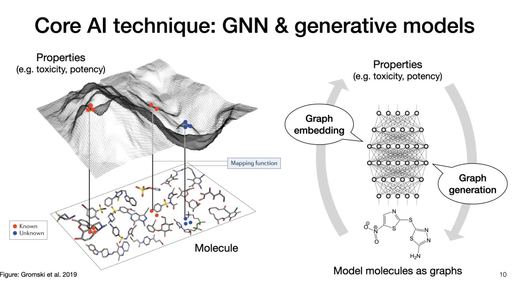
Virtual Screening
Current Approach
Take a compound → Get Morgan fingerprint (traditional , hand engineered molecular features) → pass through feed forward NN → Get property predictions
Morgan Fingerprint
Enumerate all possible substructures and group them using a hash function.
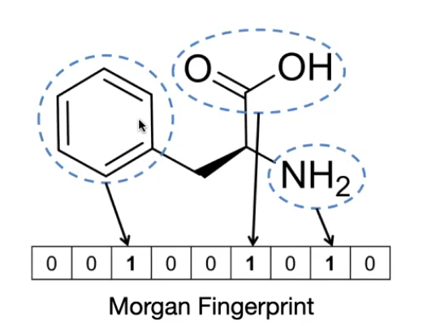
Effectively a bag of sub-structures.
New Approach
- Take compound → Learn an embedding using a Graph Neural Networks → Pass through Feed Forward NN → Get prediction
- For graph:
- Node feature: one hot encoding indicating type of atom
- Edge feature: single bond, double bond etc.
- Application:
- Used this approach to screen 2335 compounds and measure their growth inhibition against E-coli(bacteria)
- Discovered new antibiotic.
- Achieved AUC = 0.9
- Approaches like domain adaptation can improve results.
Molecular Graph Generation
Graph convolution is not invertible (unlike image convolutions)so generating graphs from embeddings does not work.
Approach 1
Use NLP like approaches to generate a molecule piece by piece.(e.g. atom by atom)
- Equivalent to character by character in NLP
- Simple to implement but higher computational complexity.(Need to re-encode graph after adding every new atom)
- Have multiple frontier nodes unlike Language E.g. 1 and 2 below
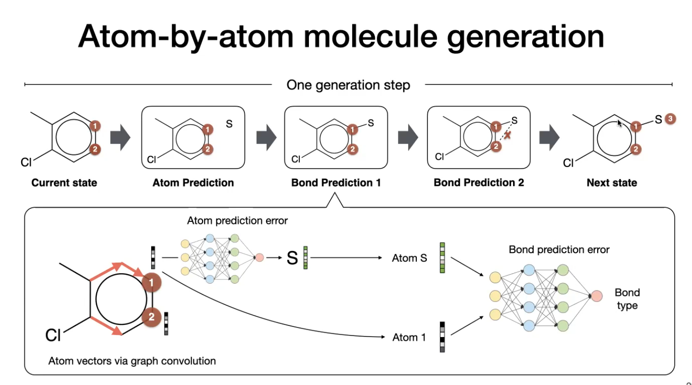
Approach 2
- Use molecular substructures rather than atoms.
- Equivalent to word by word in NLP
- Performance is better but needs a vocabulary of sub-structures.
- Junction tree algorithm can be used to reduce a graph into a tree. tree representations are easier to generate as they do not have cycles
- Use a NN to predict next substructure to be added.
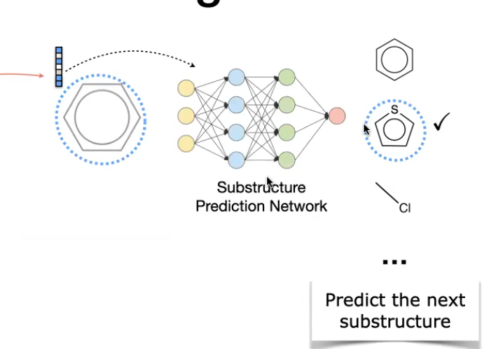
- Also need to know how to attach the two sub structures together.
- Predict the attaching point in new sub-structure and current partial graph and then merge them.
Hierarchical Graph Convolution
- Run graph convolution in the pooled-substructure level graph
- Propagate atom level embedding upwards
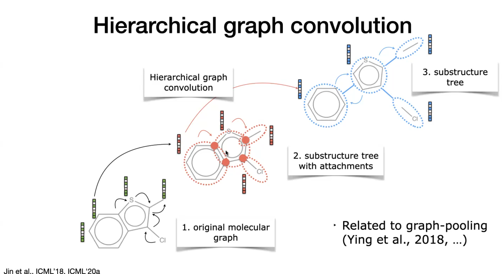
Antibody Structure Generation
- More complex 3D molecules.
- use a 3D generative model to output a 3D point cloud.
- Application: HIV antibody design
- Antibodies bind to a virus and trigger body’s immune response.
- Binding specificity/strength is largely determined by complementary determining region.
- Basic unit of antibody is a residue, whose value can be one of the 20 amino acids.
- Each residue is a substrucutre
- Each atom has a 3D coordinate.
- Performance depends on the 3D structure of the amino acids
- CDR graphs are represented as a K-nearest-neighbor graph
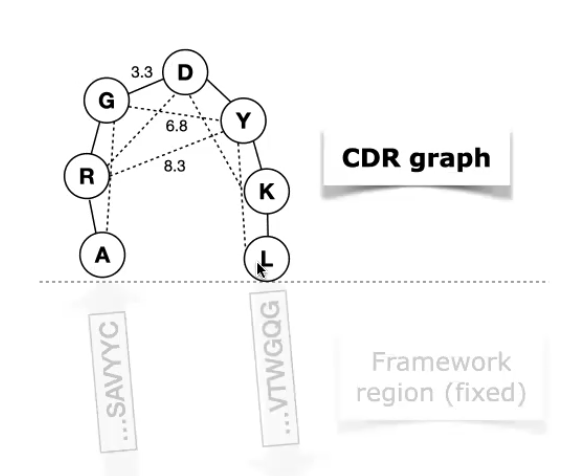
Auto regressive models are inadequate as a residue once added will not change . However if a new residue is generated and inserted to the CDR, distance between previous residues should naturally change.
Iterative graph refinement is used to update entire graph structure once a new reside is added.
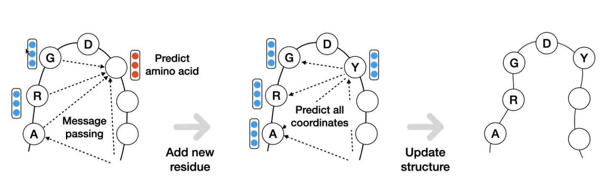